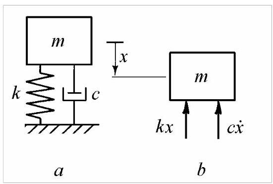
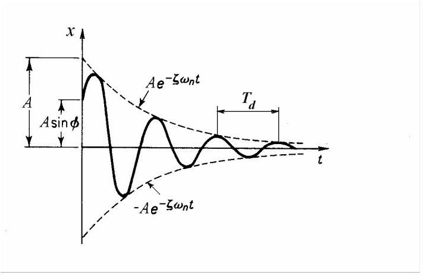
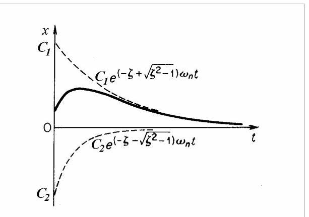
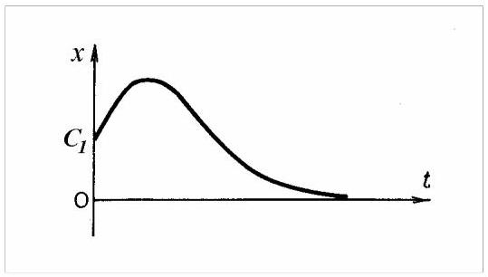
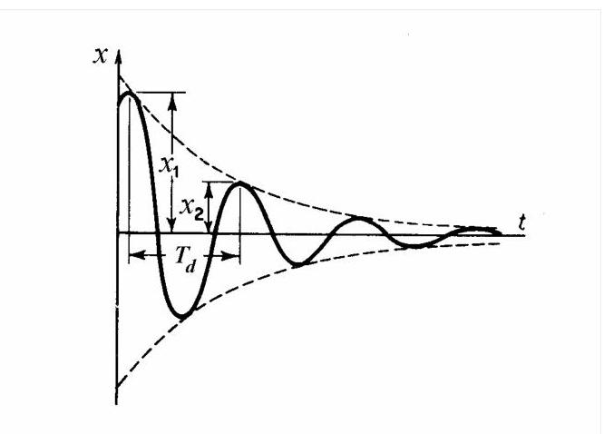
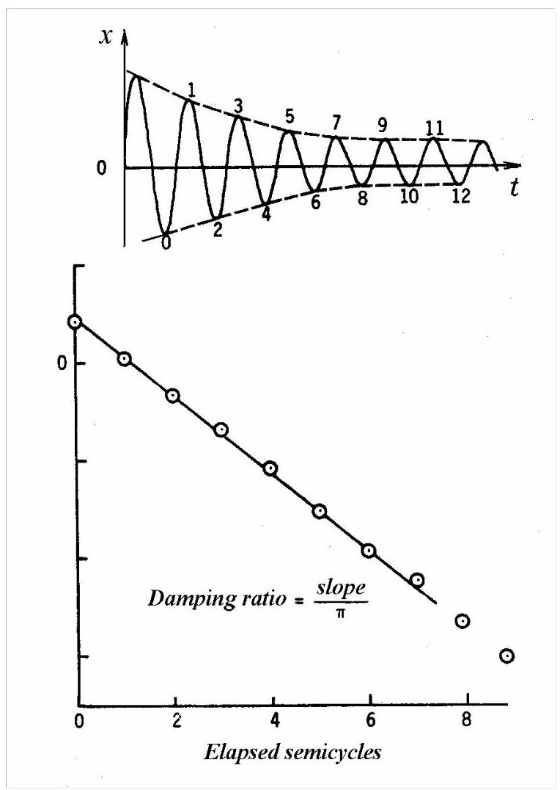

第7篇
2.3 阻尼自由振动¶
在振动过程中，能量因摩擦或其他阻力而耗散。自由振动的振幅随时间衰减，而稳态振幅只能由外部激励维持。能量的耗散通常称为阻尼(damping)。它由材料内部摩擦、结构件间摩擦、流体-结构相互作用、辐射或电磁场中的运动产生。
最简单的阻尼机制源于在粘性介质中的运动，粘性阻尼力与速度成正比且方向相反。为方便起见，可将所有阻尼力替换为单个等效粘性阻尼力，其依据是振动一个周期内耗散的能量相同。结构阻尼或滞回阻尼(hysteretic damping)由与速度同相但与位移成正比的阻尼力描述。经验表明，在飞机结构中，用滞回阻尼更能准确表示阻尼损耗。更复杂的机制，如遗传阻尼(hereditary damping)，可用于更好地描述实际系统的行为。
2.3.1 粘性阻尼¶
图2.20, a所示系统由刚度为\(k\)的线性弹簧、质量\(m\)和粘性阻尼器(viscous damper)或缓冲器(dashpot)组成。缓冲器中的力与速度成正比且符号相反。比例系数称为粘性阻尼系数(viscous damping coefficient)\(c\)，单位为\(\mathrm{N}/\left( {\mathrm{m}/\mathrm{{sec}}}\right)\)。

图2.20
对于自由振动，可利用牛顿第二定律及图2.20所示的受力图得到运动微分方程，\(b\)
可写成
假设解的形式为\(x = {\mathrm{e}}^{st}\)，我们得到特征方程
它有两个根
阻尼自由振动的通解为
其中积分常数由初始条件确定。
作为参考量，我们将临界阻尼(critical damping)定义为使(2.40)中根号项为零的\(c\)值
或
系统的实际阻尼可用一个无量纲量表示，即实际系统阻尼与临界系统阻尼之比
称为阻尼比(damping ratio)(或临界阻尼百分比)
采用此记号，方程(2.40)变为
根据根(2.44)为实数、复数或相等，上述方程必须考虑三种可能情况。
情况I:欠阻尼系统，\(\zeta < 1\)¶
对于\(\zeta < 1\)，方程(2.44)可写成
将(2.45)代入(2.41)并借助欧拉公式\({\mathrm{e}}^{\mathrm{i}\beta } = \cos \beta + \mathrm{i}\sin \beta\)转换为三角形式，得到
或
方程(2.46)表明运动为振幅逐渐减小的振荡。振幅随时间衰减与\({\mathrm{e}}^{-\zeta {\omega }_{n}t}\)成正比，如图2.21中虚线所示。
阻尼振荡的频率
小于无阻尼固有频率\({\omega }_{n}\)，称为阻尼固有频率。当\(\zeta \rightarrow 1,{\omega }_{d}\)趋近于零时，运动不再具有振荡性。
方程(2.44)可写成
其中
为振幅衰减率(指数曲线在\(t = 0)\)处切线的斜率)。

图2.21
以下方程很有用

图2.22
情况II:过阻尼系统，\(\zeta > 1\)¶
对于\(\zeta > 1\)，将(2.44)代入(2.41)得
运动不再振荡(图2.22)，称为非周期运动。

图2.23
情况III:临界阻尼系统，\(\zeta = 1\)¶
临界阻尼表示振荡与非振荡运动之间的过渡。此时通解为
运动与大于临界阻尼的情况类似(图2.23)，但能在最短时间内无振荡地回到静止位置。这用于电气仪表，其活动部件被临界阻尼，以便迅速回到测量值。
2.3.2 对数衰减率(Logarithmic Decrement)¶
确定振动系统阻尼量的一种方法是测量振荡衰减的速率。这通常用对数衰减率(logarithmic decrement)表示，其定义为任意两个连续振幅之比的自然对数。对于粘性阻尼(viscous damping)，该比值为常数。
考虑由方程(2.46)表示的阻尼振动记录曲线(图2.24)。

图2.24
衰减正弦曲线在略偏离最大振幅点(正弦函数值为1处)的右侧与指数包络线相切。然而，该差异可忽略不计，因此两个连续振幅之比可用一个周期距离处的指数纵坐标之比代替。
其中阻尼振动的周期为
对数衰减率为
对于\(\zeta < < 1,\delta \cong {2\pi \zeta }\)。
有时振动一个周期后的衰减过小，只有在\(n\)个周期后才能分辨出较小的振幅。其比值
因此对数衰减率由下式给出
若将振动峰值振幅以对数坐标绘制，而循环次数以算术坐标绘制，当阻尼为方程(2.38)所假设的粘性类型时，这些点将落在一条直线上。
实际中，先绘制峰谷包络线(图2.25)，然后在每个峰谷处测量包络线间的高度。将该高度以对数坐标对半循环次数作图，并通过各点绘制最佳直线。该直线的斜率用于确定阻尼比(damping ratio)。

图2.25
对于\(\zeta < < 1\)，方程(2.51, a)给出
因此阻尼比\(\zeta\)等于直线斜率除以\({2\pi }\)(若按图2.25所示在峰谷处测量，则除以\(\pi\))。
2.3.3 损耗因子(Loss Factor)¶
损耗因子(loss factor)是衡量阻尼的便利指标，定义为每周期损失的能量(或维持稳态条件需向系统提供的能量)\({\Delta U}\)与该周期内系统存储的峰值势能\(U\)之比。
一般而言，损耗因子(loss factor)既取决于振动的幅值，也取决于其频率，并且同样适用于非线性系统以及参数随频率变化的系统。
若\({X}_{1}\)和\({X}_{2}\)为阻尼自由振动的两个相邻振幅，则弹簧在最大位移处储存的能量为\({U}_{1} = \frac{1}{2}k{X}_{1}^{2}\)，\({U}_{2} = \frac{1}{2}k{X}_{2}^{2}\)。能量损失与原始能量之比为
其中\(\delta\)为对数衰减率(logarithmic decrement)。因此，对于小阻尼，损耗因子约等于对数衰减率的两倍。
Matlab Demo欠阻尼系统¶
以下Matlab代码可用于演示欠阻尼系统的自由振动响应：
% 欠阻尼系统自由振动演示
% 参数设置
m = 1.0; % 质量 (kg)
k = 100.0; % 刚度 (N/m)
zeta = 0.1; % 阻尼比 (欠阻尼，zeta < 1)
% 计算系统参数
omega_n = sqrt(k/m); % 无阻尼固有频率 (rad/s)
omega_d = omega_n*sqrt(1-zeta^2); % 阻尼固有频率 (rad/s)
c = 2*zeta*sqrt(k*m); % 阻尼系数 (N·s/m)
% 时间设置
t = linspace(0, 10, 1000); % 时间从0到10秒
% 初始条件
x0 = 0.1; % 初始位移 (m)
v0 = 0.0; % 初始速度 (m/s)
% 计算响应
A = sqrt(x0^2 + ((v0 + zeta*omega_n*x0)/omega_d)^2);
phi = atan2(omega_d*x0, (v0 + zeta*omega_n*x0));
% 欠阻尼系统响应
x = A * exp(-zeta*omega_n*t) .* sin(omega_d*t + phi);
% 绘制结果
figure('Position', [100, 100, 800, 600]);
plot(t, x, 'b-', 'LineWidth', 2);
hold on;
plot(t, A*exp(-zeta*omega_n*t), 'r--', 'LineWidth', 1);
plot(t, -A*exp(-zeta*omega_n*t), 'r--', 'LineWidth', 1);
xlabel('时间 (s)');
ylabel('位移 (m)');
title('欠阻尼系统自由振动响应');
legend('位移响应', '指数包络线', 'Location', 'best');
grid on;
% 计算并显示系统参数
fprintf('系统参数：\n');
fprintf('无阻尼固有频率: %.2f Hz\n', omega_n/(2*pi));
fprintf('阻尼固有频率: %.2f Hz\n', omega_d/(2*pi));
fprintf('阻尼比: %.3f\n', zeta);
fprintf('对数衰减率: %.3f\n', 2*pi*zeta/sqrt(1-zeta^2));
% 动画演示
figure('Position', [100, 100, 800, 400]);
for i = 1:10:length(t)
plot(t(1:i), x(1:i), 'b-', 'LineWidth', 2);
hold on;
plot(t(i), x(i), 'ro', 'MarkerSize', 8);
plot(t(1:i), A*exp(-zeta*omega_n*t(1:i)), 'r--', 'LineWidth', 1);
plot(t(1:i), -A*exp(-zeta*omega_n*t(1:i)), 'r--', 'LineWidth', 1);
xlabel('时间 (s)');
ylabel('位移 (m)');
title('欠阻尼系统响应随时间变化');
grid on;
xlim([0, t(end)]);
ylim([-A, A]);
pause(0.05);
if i < length(t)
cla;
end
end
% 不同阻尼比的比较
figure('Position', [100, 100, 800, 600]);
zeta_values = [0.05, 0.1, 0.2, 0.5];
colors = ['r', 'g', 'b', 'm'];
for i = 1:length(zeta_values)
z = zeta_values(i);
omega_d_temp = omega_n*sqrt(1-z^2);
x_temp = A * exp(-z*omega_n*t) .* sin(omega_d_temp*t + phi);
plot(t, x_temp, colors(i), 'LineWidth', 2);
hold on;
end
xlabel('时间 (s)');
ylabel('位移 (m)');
title('不同阻尼比对欠阻尼系统的影响');
legend('\zeta = 0.05', '\zeta = 0.1', '\zeta = 0.2', '\zeta = 0.5', 'Location', 'best');
grid on;